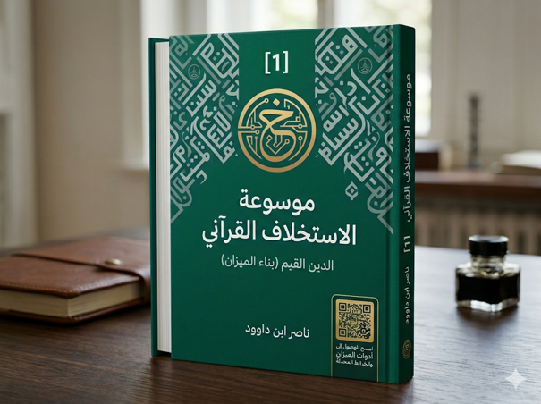

ناصر ابن داوود

نسخة نصية مستخرجة من ملف Word الذي قدمه المؤلف؛ راجع المصدر الأصلي.
جارٍ تجهيز القارئ…
المجلد الأول - الدين الخالص (معمارية الروح والتوجه)
المقدمة العامة:
إعادة اكتشاف الدين الخالص
تتمثل إحدى أكبر الإشكاليات التي أصابت الوعي الديني المعاصر في اختزال الدين الخالص في حالة وجدانية أو شعائرية معزولة عن وظيفتها التوجيهية العميقة. فقد تحوّل الإخلاص في كثير من التصورات إلى مجرد شعور قلبي أو إعلان لفظي للنية، بينما يقدمه القرآن بوصفه عملية تحرير شاملة لوجهة الإنسان كلها.
إن أزمة الإنسان ليست في فقدان المعلومات عن الله بقدر ما هي في اضطراب الوجهة؛ إذ قد يعلم الإنسان الحق، ثم يتبع غيره، وقد يدرك الخير ثم ينصرف عنه، وقد يقر بالخالق ثم يخضع لأهواء أو مصالح أو سلطات تنازعه مركزية التوجه.
ومن هنا يصبح الدين الخالص مشروعاً لتحرير الإنسان من كل صور الشرك الظاهر والخفي، ومن كل ولاء يزاحم ولاء الحق، ومن كل خوف أو طمع أو تبعية تحول بينه وبين الاستجابة الحرة للهداية.
فالمقصود بالدين الخالص ليس مجرد أداء الشعائر، بل إعادة بناء الإنسان من الداخل حتى تصبح وجهته موحدة، وإرادته متماسكة، وقلبه متحرراً من التشتت بين الأنداد.
وعلى هذا الأساس ينطلق هذا المجلد للبحث في معمارية الروح التي تسبق كل بناء معرفي أو حضاري؛ لأن الإنسان لا يستطيع أن يبصر الحق ما لم تتحرر وجهته، ولا يستطيع أن يقيم الميزان ما لم يخلص قصده، ولا يستطيع أن يحقق الاستخلاف ما لم يتجاوز عبودية الأهواء والولاءات المزاحمة.
إن الدين الخالص هو نقطة البداية في قانون الاستخلاف القرآني؛ فهو الذي يصنع الإنسان المتوجه، الذي سيبني لاحقاً ميزان الإدراك في الدين القيم، ويحقق فاعلية العمران في دين الحق.
وبذلك يصبح السؤال المركزي لهذا المجلد:
كيف يتحرر الإنسان من الشرك الظاهر والخفي ليصبح متوجهاً إلى الله وحده؟
أولاً: أهمية ترميم القيم بعد الأزمات الحضارية
إن ما تعرضت له البلاد من تخريب وتدمير طال شرقها ومغربها جعل من "إعادة الإعمار" ضرورة حتمية لا تقبل التأجيل. ومع أن الكثيرين ينصرفون إلى بناء ما تهدم من بيوت ومنشآت، إلا أن المصيبة الأعظم تكمن في تهدم القيم الإنسانية والدينية والاجتماعية وفقدان المعاني التي كانت تهيمن على المجتمعات. لذا، فإن الأولوية القصوى هي لترميم "الباطن" لضمان استقامة السلوك الإنساني في مرحلة ما بعد الأزمة ،
ثانياً: الفرق بين إعمار المدن وإعمار إنسانية الإنسان
ضرورة وجود بون شاسع بين نوعين من الإعمار:
إعمار المادة: وهو إعادة بناء المباني والقرى والنية التحتية، وهو عمل يقوم به تقنيون وفنيون ،
إعمار الإنسانية: وهو إعمار "إنسانية الإنسان" وترميم الأخلاق والمُثل، وهذا النوع هو الأهم والأجلّ؛ لأنه يتعلق بجوهر الاستخلاف، ولا يمكن لأي عمران مادي أن يصمد أو يزدهر دون إنسان سويّ من الناحية القيمية ،
ثالثاً: دور العلماء كمستودع للمبادئ التي لا تقبل التنازل
تقع مسؤولية إعادة إعمار الباطن على عاتق العلماء والباحثين والمفكرين الذين يمثلون "حراس القيم". وهنا نضع تمييزاً حاسماً بين ساحتين:
ساحة المصالح: وهي ميدان السياسيين والإعلاميين، حيث يمكن تقديم تنازلات مرحلية لتحقيق مكاسب أكبر.
ساحة المبادئ: وهي ميدان العلماء، حيث لا يجوز التنازل عن المبادئ بحال من الأحوال. فالعلماء قد أقامهم الله لحراسة هذه الأصول، وإذا بدأ العالم بالتنازل عما هو "ظاهر وراجح" من الدين -حتى في الظنيات- فإن الأمة ستفقد ثوابتها تدريجياً ، إن صمود العلماء وثباتهم على القيم هو الذي يحفظ للأمة مستقبلاً وقدرة على الصمود في وجه الاضطرابات والانهيارات الحضارية ،
الخلاصة: إن هذا الإعمار الباطني هو الوقود الروحي الذي يمنحه "الدين الخالص" للإنسان، لكي يتمكن لاحقاً من تطبيق "دين الحق" (السنن) والوصول إلى "الظهور" (العمران والشهادة الحضارية).
المعجم التشغيلي لمفاهيم الاستخلاف السنني (The Operational Lexicon)
تمهيد منهجي: مستويات الخطاب في المشروع
لضمان الانضباط المعرفي وعدم انزلاق المفاهيم نحو السيولة الإنشائية، يتحرك الخطاب التحليلي في هذه الموسوعة عبر أربعة مستويات متداخلة ومحددة بدقة:
1. المستوى التجريدي الفلسفي ──► 2. المستوى السنني القرآني
│
▼
4. المستوى التطبيقي الحضاري ◄── 3. المستوى النمذجي النظامي
المستوى التجريدي (الفلسفي): يؤصل للماهيات، والمقولات الكلية، والأطر الوجودية والمعرفية (ما وراء النظام).
المستوى السنني (القرآني): يستنبط القوانين الحاكمة، والحدود التشريعية، والمآلات السننية الثابتة من الشفرة العليا (القرآن الكريم).
المستوى النمذجي (النظامي): يُحيل السنن الإلهية إلى معادلات سيبرانية، وهياكل تنظيمية، وبروتوكولات تدفق (كيف يعمل النظام).
المستوى التطبيقي (الحضاري): يتنزل على الواقع المعاش (التعليم، الاقتصاد، الدولة، المؤسسة) لإنتاج حلول مادية مشهودة وعمران مستدام.
الباب الأول: النظام المفاهيمي العام (الطبقات الثلاث للمصطلحات)
1. النظام (System)
الطبقة اللغوية الفلسفية: بنية مركبة من عناصر متمايزة ومترابطة، تتفاعل وفق علاقات داخلية منظمة لتحقيق غاية وجودية محددة.
الطبقة السننية القرآنية: الخَلْق المقدر والموزون بأقدار معلومة تمنع العشوائية والاضطراب: ($\text{إِنَّا كُلَّ شَيْءٍ خَلَقْنَاهُ بِقَدَرٍ}$). وفي فضاء الإنسان والمجتمع، يمثل الكيان المستخلف الخاضع للسنن الحاكمة.
الطبقة التشغيلية (السيبرانية): كل بنية مؤسسية أو مجتمعية تتكون من (مدخلات المعالجة ──► عمليات التشغيل ──► مخرجات الأثر ──► تغذية راجعة)، وتتحرك الكيانات في الموسوعة (الإنسان، المجتمع، الدولة، الاقتصاد) كأنظمة فرعية مترابطة.
2. المعمارية (Architecture)
الطبقة اللغوية الفلسفية: المخطط الهيكلي والمفهومي الكلي الذي يحدد طبيعة العلاقات البنيوية والمنطقية بين أجزاء الكل قبل الشروع في التنفيذ.